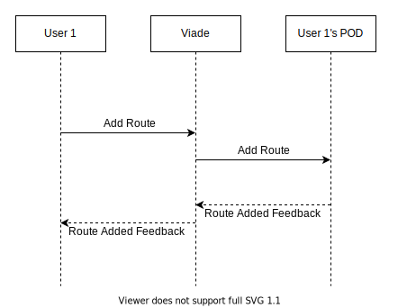
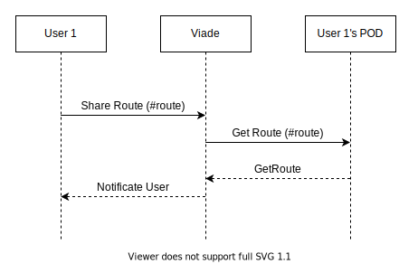

1. Introduction and Goals
This is a decentralized Routes Management Proyect based on Solid and React technologies.Based on a decentralized network,so there is not a unique central server where all the personal data is stored and classified. All the data is stored in the users' PODS, and each user knows if the application has access to their data. This proyect aims to :
-
Provide the users a Well-formed application.
-
Be Reliable, Operable, Functional Suitable and Transferable
-
Have different Stakeholders: Users, Developers, SOLID and React Developers…
1.1. Requirements Overview
-
The system will be based on a decentralized architecture wheredata storage is separated from the app.
-
Users can store their routes in their own pods.
-
Users can view the routes stored on a map.
-
The app will allow a user to share pictures, videos or information about a route with other friends.
-
A user can get notifications when some friend shares a route with him.
-
Users can have groups of friends with whom they may want to share a route
-
It should be possible to view routes loaded by users that are using a different app, so interoperability with other route management systems should be taken into account.
-
The system could work on a mobile device
-
Users can share their routes while they are doing the routes
1.2. Quality Goals
The aim of this proyect is to offer the users a way to manage their own routes, following some quality goals in order to guarantee a good user experience. .Quality Goals Scenarios
| Quality Goal | Scenario |
|---|---|
Reliability |
As the storage of the routes is not in a centralized server, the users can have always access to theirs and be able to manage them as the data is always on their PODs. |
Transferability |
The system ensures that the application is compatible with other applications that follow the same system and the users can share their routes or multimedia to other users who have a compatible application. |
Functional Suitability |
Whenever a user performs a change one of his routes or add a new one, the action must be done by the application and save on the record. |
These quality goals are the ones which have the most importance to the major stakeholders on this proyect.
1.3. Stakeholders
The following table describes the stakeholders of this project and what is expected from them at the beginning of the project, it will be updated as the project goes on if it is required.
| Role/Name | Contact | Expectations |
|---|---|---|
Development |
Development team(see below table for details) |
The development of the App |
Supervision |
Teachers of the subject |
Supervise the work done by the students and evaluating it as well |
Helping Development Team |
Solid Community |
As a community interested in solid if the development team has a doubt and seeks for help the community is expected to help |
Evaluating the final product |
Inrupt Supervisor |
As part of the inrupt challenge someone is expected to take a look to the projects created by the students |
Testing the app/Give feedback |
Users |
Test the app to give some feedback to the development team to improve the app |
| Role/Name | Contact | Expectations |
|---|---|---|
Front-End |
Guillermo Fernández-Campoamor Fernández |
Focus on the front-end side of the app |
Front-End |
Fernando Sáenz de Santa María Modroño |
Focus on the front-end side of the app |
Front-End |
Alejandro Matas Sánchez |
Focus on the front-end side of the app |
Back-End |
Andrés García Celis |
Focus on the back-end side of the app |
Back-End |
Clara Miranda García |
Focus on the back-end side of the app |
Back-End |
Violeta Ruiz Martínez |
Focus on the back-end side of the app |
Back-End |
Miguel Rodríguez Huerta |
Focus on the back-end side of the app |
2. Architecture Constraints
2.1. Technical constraints
| Constraint | Explanation |
|---|---|
Solid |
The application must follow the Solid specifications and make use of Solid pods, as well as being decentralized and follow linked data principles. |
React framework |
React is the framework that will be used to implement the application. The architecture of the application has to be adapted to the inner workings of the Javascript library (components, routing, rendering…). |
Interoperability between similar webapps |
The design for the data saving and retrieving has to be thoughtfully taken care of such that a user can switch between similar apps without having to modify their data (using of Solid, W3C standards, etc.). |
Test-Driven Development |
Any functionality added must be constantly and thoroughly tested by the development team, making use of the testing tools available (Cucumber, Travis, Codecov). |
2.2. Organizational and political constraints
| Constraint | Explanation |
|---|---|
Short development time |
Due to the nature of the course, the development time for the "finished" product is extremely small, consisting only of seven weeks. |
Empty budget |
Given that this is a student project, the budget for it is nonexistent. Team members will not be payed for their work, nor will they have access to non-free resources. |
Almost inexistent experience |
The team has hardly any experience with the technologies planned for use. This severely limits the productiveness of each member, and the team. |
Concurrent projects |
Many teams will be working within the same time frame on different apps, all with the same expected functionality. This means that coordination in creating a common vocabulary will be crucial for the satisfactory development of this, and every other similar product. |
2.3. Conventions
| Constraint | Explanation |
|---|---|
Linked Data |
The project has to make use of linked data principles and guidelines, following the Solid specifications. |
W3C Standards |
The architecture of the project has to comply with as many web standards as possible, as stated in the Solid specifications. |
React best practices |
Guidelines and advices for React should be followed to ensure an easily testable and fixable application. |
UI Design |
The design of the user interface must feel intuitive for people new to the app. This means following current standards of interface, color and icon design. |
Documentation |
The project’s architecture must be documented in AsciiDoc format following the arc42 templates. |
3. System Scope and Context
The main goal of this project is to create a decentralized routes management system based on Solid, which means that every user has its own Pod, that is their own personal storage space, where all of their information is stored. The main communication partners of the applications will be the users themselves.
Technical interfaces (channels and transmission media) linking your system to its environment. In addition a mapping of domain specific input/output to the channels, i.e. an explanation with I/O uses which channel.
Many stakeholders make architectural decision based on the technical interfaces between the system and its context. Especially infrastructure or hardware designers decide these technical interfaces.
E.g. UML deployment diagram describing channels to neighboring systems, together with a mapping table showing the relationships between channels and input/output.
<Diagram or Table>
<optionally: Explanation of technical interfaces>
<Mapping Input/Output to Channels>
4. Solution Strategy
4.1. Technology decisions
The following technologies are the ones used in the project:
-
React Native and React. The application is hybrid, with a focus in mobile devices and similars, but still having a web-oriented version. Although the workload is considerably higher because effectively two different applications have to be developed, it was decided this was the best approach to tackle the expected results.
-
Solid React Components. A library specifically designed to use Solid in React, it helps with the integration of Solid functionality in the application. It helps the development of the part of the application that deals with the data, and time is a very valuable resource for this project.
-
Leaflet. Javascript library used for the management of the geogrphical-related data, as well as displaying maps and routes. Considered the best option by the team, because is easy to use, many resources are available to check out, and is highly customisable in the interface part.
-
Solid libraries. This libraries (like LDFlex, TripleDoc, rdflib.js, etc.) will ease the connection between the application data and the user’s pod data, specifically in the operations of saving, retrieving and interconnecting data.
4.2. Decomposition of the system
-
The system will be divided in interrelated high-level modules.
-
Each module will contain several components (or sub-modules, in some cases), which will be independent from any component outside of their module.
-
The only connections between the modules will be user data moving from one place to another, through middle "facade" classes. The components in the modules will not notice the data moving, only when they have data available.
This module and component-oriented design will make the division of the development work much easier, and the using of facades for data accessing decouples the interface from the data, somewhat similar to a MVC layout, keeping cohesion; although a drawback that will have to be taken into account is the independent development of components, which can obfuscate the team if the interconnection between components and modules is not considered when developing and testing.
More over, the system will be divided (in the interface and part of the control layers) into two applications, web-oriented and native-oriented. This will difficult the decisions when it comes to make both compatible.
4.3. Decisions on how to achieve quality goals
-
Heavy testing. Test-driven development is a must to achieve any form of quality. When creating user stories, as many testing scenarios as possible will accompany them to ensure what the new functionality must achieve and what it should not do. This will lose time when creating the tasks, but it will help the agility of the development.
-
Coordination. The team will coordinate itself through discussing as much as possible every problem or idea, as well as giving feedback in pull requests and issues in development.
-
Agile methodology. The team set on developing with an agile methodology in mind: use of kanban, use of issues to enhance communication, division of tasks in small and doable user stories, and giving feedback to each other when possible (connecting to previous point).
4.4. Organizational decisions
-
The team will use user stories combined with Kanban, as well as issues and pull-requests from Github to keep a workflow; with previous experience in the degree in agile development, this semi-agile workflow will benefit more the development than a systematic one.
-
The team will be split initially into two sub-units: front-end and back-end. Because information research in Solid and React was also divided, it is the right decision to keep this division in the development process, though it is not a complete split, that is, each team member is not forced to work in their part, specially in critical situations where more people is needed to solve an issue.
5. Building Block View
The building block view shows the static decomposition of the system into building blocks (modules, components, subsystems, classes, interfaces, packages, libraries, frameworks, layers, partitions, tiers, functions, macros, operations, datas structures, …) as well as their dependencies (relationships, associations, …)
This view is mandatory for every architecture documentation. In analogy to a house this is the floor plan.
Maintain an overview of your source code by making its structure understandable through abstraction.
This allows you to communicate with your stakeholder on an abstract level without disclosing implementation details.
The building block view is a hierarchical collection of black boxes and white boxes (see figure below) and their descriptions.

Level 1 is the white box description of the overall system together with black box descriptions of all contained building blocks.
Level 2 zooms into some building blocks of level 1. Thus it contains the white box description of selected building blocks of level 1, together with black box descriptions of their internal building blocks.
Level 3 zooms into selected building blocks of level 2, and so on.
5.1. Whitebox Overall System

- Motivation
-
The above decomposition eases the development by a fair margin, as the division of tasks is more direct among the development team members; the team has two sub-units, front-end and back-end, and this division clearly states what should be done mostly by each sub-unit, and how they should coordinate to make everything connected. The different modules are created upfront, and from there every member will know what will be connected to what they are creating.
- Contained Building Blocks
-
-
Viade: The main application, the project being created.
-
- Important Interfaces
-
-
Pod provider: Any Pod provider available for the user to choose. Crucial for the application to be able to connect to the user’s Pod.
-
User’s Pod: The data storage of the user. The application will have access to it, to move the necessary data to provide its functionalities.
-
User: The user, which has access to the application, and gives their permission for it to manipulate their Pod, so they can access the functionalities of the application.
-
5.1.1. Level 1 - Viade
-
Purpose/Responsibility: Viade is a route-management system that lets users create routes and share them with their friends, and is based on the Solid specifications. It is structured as a layered-architecture webapp, with layers connected through facades.
-
Contained Building Blocks:
-
Interface Layer: The layer with which the user will directly interact. It has all the components related with the user interface, and it relies on the Control Layer to get any needed data to output to the user.
-
Control Layer: Layer that deals with receiving requests from the Interface Layer, do different requests to the Data Access Layer, receive the data, construct the needed components and send them to the Interface Layer.
-
Data Access Layer: This layer will transform requests from the Control Layer to requests to the User’s Pod. In some cases it will retrieve data, and it will process it accordingly so the Control Layer can receive it and use it.
-
-
Interfaces:
-
Cache: The cache is a component which has the sole purpose of intercepting and saving data going through the layers of the application, so the retrieving of data is faster because it is saved in memory.
-
5.1.2. Level 2 - Interface Layer
-
Purpose/Responsibility: Ease the interaction between the user and the Viade system.
-
Contained Building Blocks:
-
Login: Bars the interaction of any potential user with the app unless they have a valid (Solid) account.
-
MapView: The map the user interacts with. It contains all the routes created by him and lets modify them or create new ones.
-
Menu: Inside the menu, a user can find many options related with notifications, file sharing and configuration.
-
5.1.3. Level 2 - Control Layer
-
Purpose/Responsibility: Validate and process the data of the application, to be able to show to user valuable information.
-
Contained Building Blocks:
-
Login component: A component that offers the user the option to choose its Pod Provider and login with their WebID.
-
Map: Module formed by components that process the data related to route-management.
-
Menu: Module containing all the components that offer the menu options.
-
5.1.4. Level 2 - Data Access Layer
-
Purpose/Responsibility: Retrieve and save data from the authenticated user’s Pod related to the functionalities of the application. This layer will receive information by the user and make use of web standards to move the needed data accordingly.
-
Contained Building Blocks:
-
DataProcessingModule: Module containing several components that deal with RDF data, processing it and converting it for the Control Layer to be able to use it.
-
DataAccessModule: As the name suggests, this is the module that deals with the data. It makes heavy use of several libraries complying with Linked Data specifications to create, save, retrieve and delete resources from the User’s Pod.
-
6. Runtime View
In this section of the documentation important use cases will be described in order to understand how the system communicates at runtime.
This part of the documentation will be in continuous development.
6.1. Adding a route
The user will be able to add new routes. The data belonging to that specific route will be stored in its own particular pod.

6.2. Sharing a route
The users are capable of sharing a route that has been previously added with their friends. In order to do it, they will just select the route that should be shared and the system will get it from the user’s POD. Afterwards, Viade will notificate the user about the state of the sharing process, indicating whether there’s been an error or not.

7. Deployment View
The deployment view describes:
-
the technical infrastructure used to execute your system, with infrastructure elements like geographical locations, environments, computers, processors, channels and net topologies as well as other infrastructure elements and
-
the mapping of (software) building blocks to that infrastructure elements.
Often systems are executed in different environments, e.g. development environment, test environment, production environment. In such cases you should document all relevant environments.
Especially document the deployment view when your software is executed as distributed system with more then one computer, processor, server or container or when you design and construct your own hardware processors and chips.
From a software perspective it is sufficient to capture those elements of the infrastructure that are needed to show the deployment of your building blocks. Hardware architects can go beyond that and describe the infrastructure to any level of detail they need to capture.
Software does not run without hardware. This underlying infrastructure can and will influence your system and/or some cross-cutting concepts. Therefore, you need to know the infrastructure.
Maybe the highest level deployment diagram is already contained in section 3.2. as technical context with your own infrastructure as ONE black box. In this section you will zoom into this black box using additional deployment diagrams:
-
UML offers deployment diagrams to express that view. Use it, probably with nested diagrams, when your infrastructure is more complex.
-
When your (hardware) stakeholders prefer other kinds of diagrams rather than the deployment diagram, let them use any kind that is able to show nodes and channels of the infrastructure.
7.1. Infrastructure Level 1
Describe (usually in a combination of diagrams, tables, and text):
-
the distribution of your system to multiple locations, environments, computers, processors, .. as well as the physical connections between them
-
important justification or motivation for this deployment structure
-
Quality and/or performance features of the infrastructure
-
the mapping of software artifacts to elements of the infrastructure
For multiple environments or alternative deployments please copy that section of arc42 for all relevant environments.
<Overview Diagram>
@startuml
node "Android Phone" as android { node "React Native app" as app { node "Proprietary code" as owncode node "SOLID library" as solidlib } }
node "Web browser (Chrome/Firefox)" as browser { node "Web app" as webapp { node "Proprietary code" as owncode2 node "SOLID library" as solidlib2 } }
database poddb [ <b>Pods server</b> ---- This can either be deployed internally, or using a free web service. ]
cloud "Maps API" as map
owncode -→ solidlib owncode2 -→ solidlib2
solidlib -→ poddb : read/write solidlib2 -→ poddb : read
owncode -→ map owncode2 -→ map
@enduml
- Motivation
-
Both Native and Web applications rely on a SOLID library to get data from the pods server/database. Both use, also, the Maps API to show map data, which is then overlaid with a representation of the data collected from the pods.
- Quality and/or Performance Features
-
<explanation in text form>
8. Cross-cutting Concepts
As there is no final decisions about anything at the moment that belongs to this category because the development of the app hasn´t started yet, so there is not much to put in this category for now, but it will be updated as the project goes on. I haven´t erased the examples of this document to take a look to them when it is really needed in the near future.
This section describes overall, principal regulations and solution ideas that are relevant in multiple parts (= cross-cutting) of your system. Such concepts are often related to multiple building blocks. They can include many different topics, such as
-
domain models
-
architecture patterns or design patterns
-
rules for using specific technology
-
principal, often technical decisions of overall decisions
-
implementation rules
Concepts form the basis for conceptual integrity (consistency, homogeneity) of the architecture. Thus, they are an important contribution to achieve inner qualities of your system.
Some of these concepts cannot be assigned to individual building blocks (e.g. security or safety). This is the place in the template that we provided for a cohesive specification of such concepts.
The form can be varied:
-
concept papers with any kind of structure
-
cross-cutting model excerpts or scenarios using notations of the architecture views
-
sample implementations, especially for technical concepts
-
reference to typical usage of standard frameworks (e.g. using Hibernate for object/relational mapping)
A potential (but not mandatory) structure for this section could be:
-
Domain concepts
-
User Experience concepts (UX)
-
Safety and security concepts
-
Architecture and design patterns
-
"Under-the-hood"
-
development concepts
-
operational concepts
Note: it might be difficult to assign individual concepts to one specific topic on this list.

9. Design Decisions
In this project one of the main constraints for developing the application is the use of React and SOLID technologies, and the implementation of a web view of the application. Taking into account these constraints we decided to develop two versions of the application, one version is a web application that can be access from the navigator, and the other version is a mobile app.
The VIADE application is an application based on the management and tracking of Routes created by the users, therefore the user would want to have the application to be accessible from anywhere. For this reason we think that is better to have a mobile version of the VIADE Application. As one is the constraints of the project is the mandatory development of the web-version application, we will implement the mobile-version and web-version apps. The mobile-version will have all the powerful and useful functionalities (the tracking of routes while the user is walking, take and add pictures or videos of the routes, and other functionalities that are supposed to be done on the outside. The web-version will be a reduced version of the mobile one, but still being a functional and realiable application. The decision of develop two application-versions might be a risky decision but following the next architecture pattern we think the risk will be lower: This pattern is the Façade Architecture pattern.
In our case we want to develop two different versions, one for mobile and another for the web.
- We decided to follow this patterns for two reasons
-
-We may have a lot of independent classes, so this is a nice way of diving the system into subsystems, providing a simplified view of the whole system. -As we want to develop two versions of the app, the data access and the bussiness logic should be nearly the same in both. The main difference between both versions is the presentation layer as they use different technologies (React and ReactNative, respectively).The use of this pattern help us to have the same logic classes for both versions and the possible integration of both within the same project.
| Problem | Solution |
|---|---|
App Context |
Devolop of two compatible versions |
Two Versions |
Use of Façade Architecture pattern |
Complex System |
Use of Multitier architecture( Presentation tier, Business Tier, Data Access Tier ) |
Above is shown the first draft of the Architectural Design, followind the Façade Architecture pattern.

+-------------+
| Pod |<------+
| | |
+-------------+ | user data
|
|
|
+--------+ +--------+----+ /---------------\
| |---+ +--->| Data Access |
| | | | | |
| GUI | | Control | | |
| | | | | |
+---+----+ +-------------+ \---------------/
10. Quality Requirements
After we discussed some more the design and the goals of this proyect some quality attributes that aren’t as notable or important that the ones that we are focusing on came to light. Some of this includes attributes like usability, learnability or flexibility. This three, for example, constitute an integral part of every application and will be taken into consideration in a future stage of development.

11. Risks and Technical Debts
In the development of this project we are facing the following risks and technical debts that may affect our work.
Risk / Technical debts |
Measures we are taking |
The team is not familiar with Solid |
We will be researching about it using all the resources available at the official webpage and repositories |
The team is not familiar with React framework |
We will be researching about it to be familiar with all of its capabilities that fit the most in our project |
No experience working in a team this big |
We will be working on using Git properly to get the most out of it and keep an open conversation to divide the work in the best way possible |
Little experience with JavaScript |
We will try to work on our own to get familiar with the language |
Coordinating with other teams to reach an standard |
We should be working with other teams to agree on using an standard for the routes to provide interoperability |
12. Glossary
| Term | Definition |
|---|---|
<Term-1> |
<definition-1> |
<Term-2> |
<definition-2> |
About arc42
arc42, the Template for documentation of software and system architecture.
By Dr. Gernot Starke, Dr. Peter Hruschka and contributors.
Template Revision: 7.0 EN (based on asciidoc), January 2017
© We acknowledge that this document uses material from the arc 42 architecture template, http://www.arc42.de. Created by Dr. Peter Hruschka & Dr. Gernot Starke.